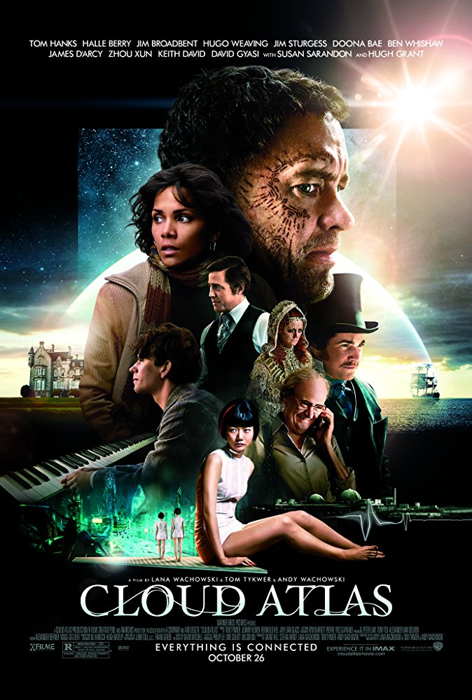

Cloud Atlas
Action , Drama , Mystery
26 October 2012 (USA)

Lucy
Action , Sci-Fi , Thriller
6 August 2014 (France)
 A paraplegic marine dispatched to the moon Pandora on a unique mission becomes torn between following his orders and protecting the world he feels is his home.
A paraplegic marine dispatched to the moon Pandora on a unique mission becomes torn between following his orders and protecting the world he feels is his home.Avatar
Action , Adventure , Fantasy
17 December 2009 (UK)

Interstellar
Adventure , Drama , Sci-Fi
7 November 2014 (USA)